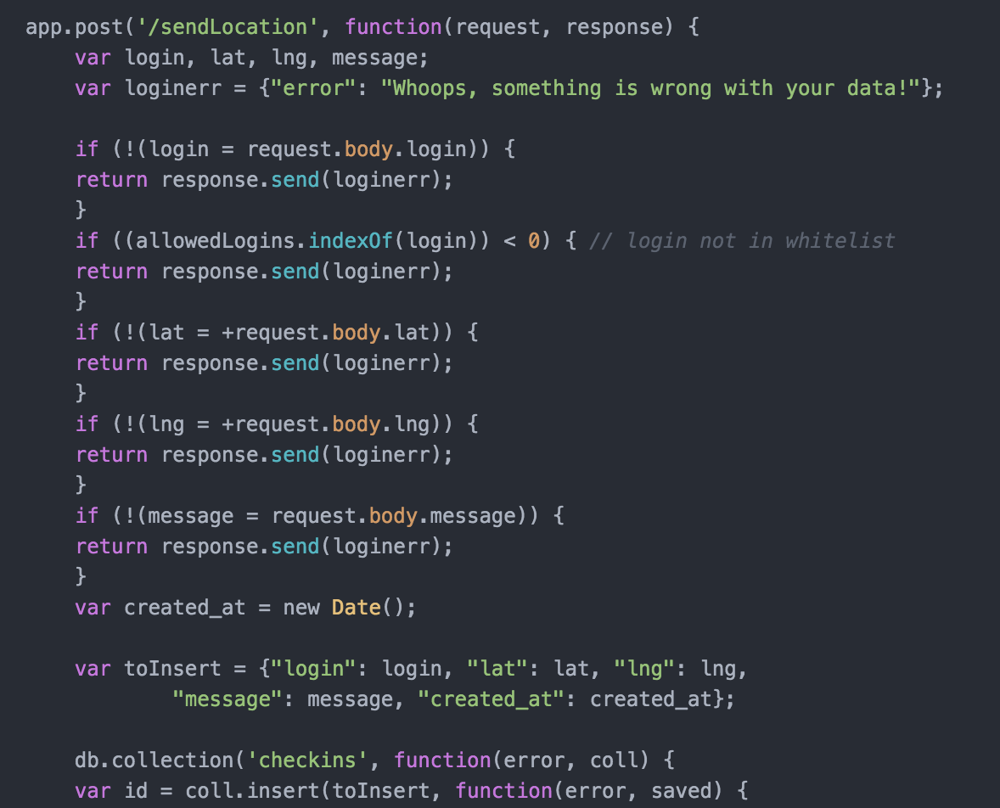
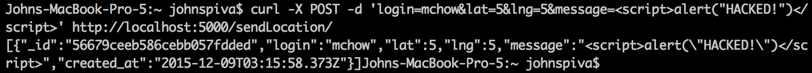
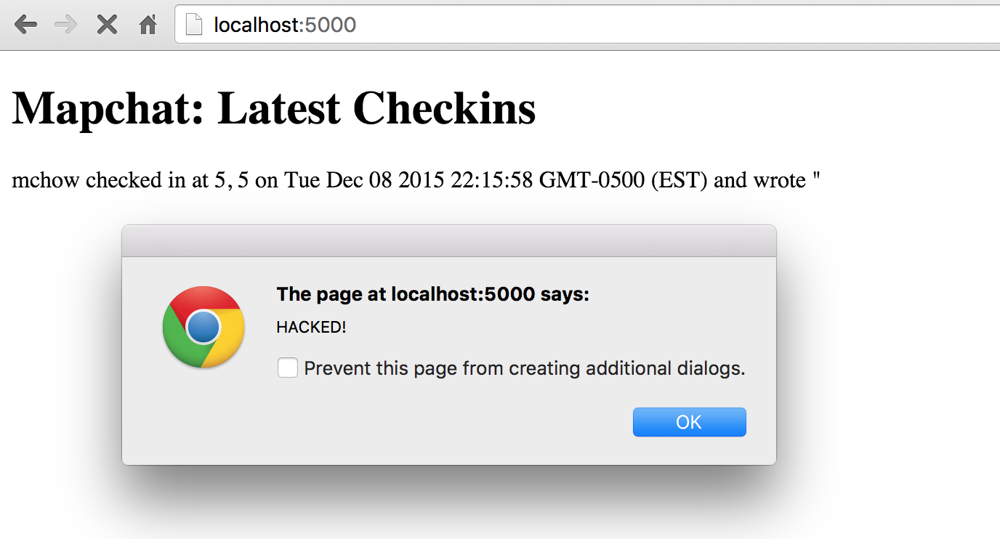
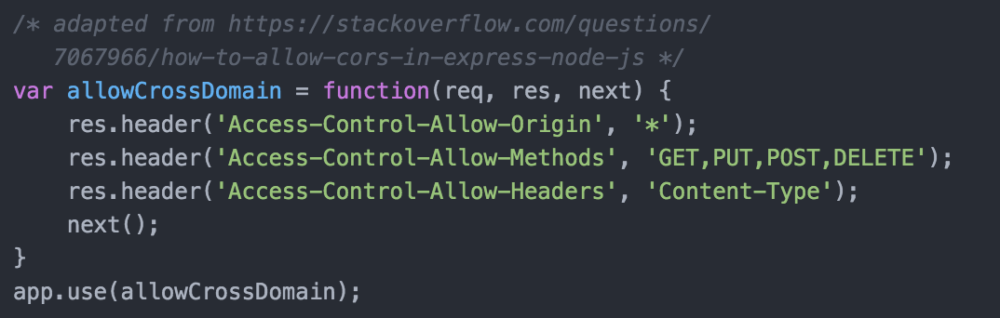

by John Spiva
Product - A server for a service called 'mapchat'. It provides various features to the user, such as getting the latest checkin, adding checkins to the server, and the ability to look at all checkins.
My Job - To identify at least 3 security vulnerabilities in the product.
I initally just gave the various routes input that I thought might confuse or break the application to see where unpredicted might be able to get through. Then I looked at the source code for other places where vulnerabilities might exist. Finally, I used curl and tamper data for firefox to give the application various inputs and view the results.
Two major vulnerabilities were found. One was simply from not considering users who might have malicious intentions with what they give the application. The application currently puts too much trust in them, instead of reviewing whatever they give the application before actually using it. The second was a vulnerability due to allowing anyone to access the application. There are ways for malicious sites to use this ability to obtain potentially sensitive data on their own users.
Database injection
Location:
The '/sendLocation' route.
Severity of Issue:
High.
An example of a serious attack should be enough justification that this is a highly severe issue. One example would be if a malicious user injected some html code into the database and had it redirect the page to one that looked just like it, but instead gave the malicious user whatever data was entered. Then this malicious user could have access to many peoples' locations without them knowing.
Description of issue:
I found it by simply looking at the source code. I saw that the data entered into the message field was not sanitized at all.

Proof of vulnerability:
The first part of the proof is the data I used curl to send to the database.

The second part is the resulting webpage whenever you go to the default webpage.

Resolution:
One way to resolve this issue would be to sanitize the input before it gets sent to the database. For example, one simple way to sanitize the message input would be to remove the characters '<', '>' if they are present in the input. Some javascript such as 'message.replace(/[\[\]']+/g,'')' could be used to do this.
The database injection issue is also present in the lat and lng fields in the '/sendLocation' route.
Access-Control-Allow-Origin is set to *
Location:
The "allowCrossDomain" variable.
Severity of Issue:
Medium.
If there is sensitive data being handled by the app (such as location data in mapchat), some malicious site might be able to send requests on behalf of its users and obtain that data.
Description of Issue:
I found it by looking at the source code.
Proof of vulnerability:

Resolution:
One way to resolve this issue would be to just create an array of whitelisted origins and only allow those origins.
My recomendation would be to look more closely at the tools mongodb can give you to prevent any user input from causing harm to your application. No matter how carefully you try to sanitize the input, malicious users will be able to think of new ways. However, by using tools that mongodb provides, you can leave the handling of that input to them.